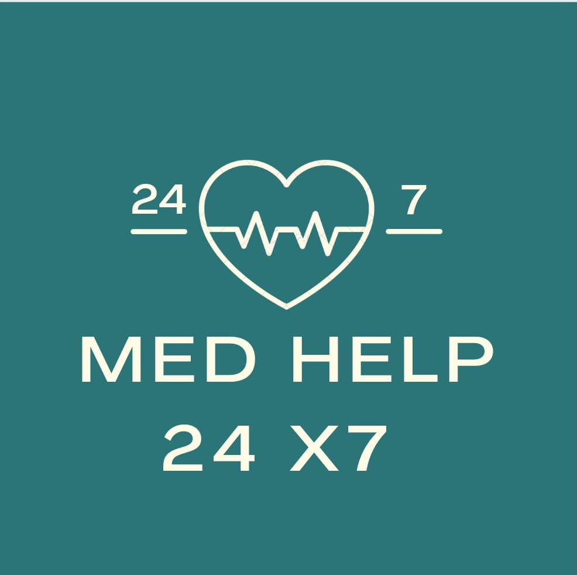

Get any cure for yourself in 5 minutes!! Stay healthy Stay safe!!
Modern problems require modern solutions. This unprecedented pandemic has changed the functioning of the world. We now find it difficult to go to doctors for regular health check ups and treatment of diseases. So here are we with a website that will provide you all the information about diseases, their symptoms and cure. You can also chat with our medical experts that will provide advice and help you with all your queries.

Diseases
Cold and flu
Description-In contrast to the flu, a common cold can be caused by many different types of viruses. The condition is generally harmless and symptoms usually resolve within two weeks.
Spread by-By airborne respiratory droplets (coughs or sneezes).
By touching a contaminated surface (blanket or doorknob).
Symptom- Symptoms include a runny nose, sneezing and congestion. High fever or severe symptoms are reasons to see a doctor, especially in children.
People also experience some variation in symptoms like-
Pain areas: muscles
Cough: can be with phlegm
Nasal: congestion, runny nose, sneezing, loss of smell, redness, or post-nasal drip
Cure- Most people recover on their own within two weeks. Over-the-counter products and home remedies can help control symptoms
As it is usually vulnerable to children, Pediatrician can be a specialist for it’s treatment.
Description-an inflammation of the two oval-shaped pads of tissue at the back of the throat.
Tonsillitis is usually caused by a viral infection but can be from a bacterial infection.
Symptom-symptoms include sore throat, difficulty swallowing and tender lymph nodes.
People also experience other symptoms-
Pain areas: in the ear
Pain circumstances: can occur while swallowing
Whole body: chills, fatigue, fever, or malaise
Cure-
Self-care - Tea with honey, salt water gargle, throat lozenge. These all soothes sore throats.
Medication- Antibiotics, penicillin etc.
Surgery-Tonsillectomy, surgical removal of the tonsils.
Specialist- Pediatric ENT's
Description- it is usually caused by a virus. Less frequently, it can be a sign of another disorder, such as inflammatory bowel disease or irritable bowel syndrome.
Symptom-loose, watery stools occur more frequently than usual.
Cure- Self care - Replacing lost fluids with an oral rehydration solution (ORS) may help in preventing dehydration.
If the condition hasn’t improved within 2 days, seek a doctor immediately.
Specialist- gastroenterologist
 Aditya Kumar
JS coder
Aditya Kumar
JS coder
 Shashank Gangwar
R & D
Shashank Gangwar
R & D